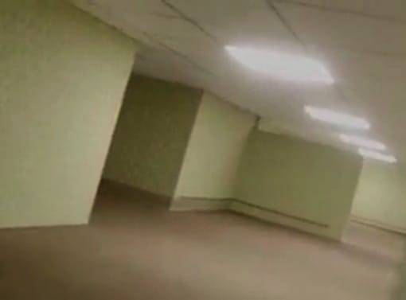
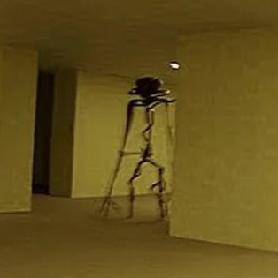
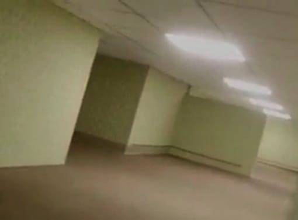
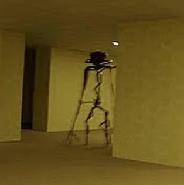

Level 0
Level 0 is the first level of the backrooms and serves as a "tutorial level" for those who fall into the backrooms for the first time.
Appearence
Level 0 is a infinte, square based maze which consists of damp yellow carpet, yellow walls with repeating paterns on them and inconsistently spaced flourecent lights that constantly emmit a low humming noise.
Phenomenons
Some places in the level do not follow standard physics, you could walk 3 kilometers and have only moved 10 meters in physical distance. This combined with repeating carpet and paterned walls makes navigation extremely difficult. Human contact once inside the level is nearly non-existant, other humans never see eachother, radio frequencies become unreliable and distorted, GPS and satelite signals cant connect to anything. Due to the extreme sensory deprevation People go insane trying to escape and a great number of people have died from starvation, dehydration or psychological trauma. Hullucinations are very common in those that stay for more than 2 weeks (in frontroom time), some hullucinations include:
Enties
Enterences
The Frontrooms is the most consistant way to enter Level 0
Exits
Level 0 can only be exited by learning how to no-clip
Gallery
 


